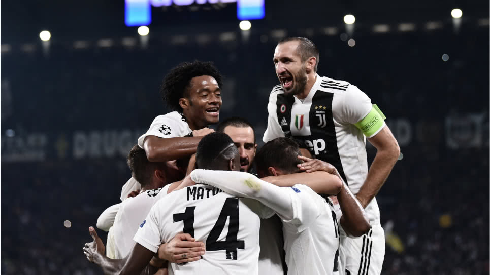

Mundo Futbol
Juventus
La Juventus de Turín (oficialmente «Juventus Football Club S.p.A.», del latín iuventūs, español juventud, AFI: juˈvɛntus), conocida simplemente como Juventus o, popularmente, la Juve (AFI: ˈjuːve), es un club de fútbol italiano con sede en la ciudad de Turín, capital de la región del Piamonte. Fue fundado el 1 de noviembre de 1897 con el nombre de «Sport Club Juventus» por un grupo de estudiantes locales.

Es el segundo equipo de fútbol italiano más antiguo entre los que siguen activos —después de la sección de fútbol del Genoa— y, junto con el Torino, es uno de los dos clubes de fútbol profesionales de la capital piamontesa. Vinculada a la familia Agnelli desde 1923,8 el club ha militado ininterrumpidamente en la máxima categoría profesional del fútbol italiano (denominada desde 1929 Serie A) desde su fundación,Nota 3 con la única excepción de la temporada 2006-07. El club ejerce de local desde el año 2011 en el Allianz Stadium, que cuenta con una capacidad o aforo total para 41 507 espectadores
De acuerdo con un sondeo realizado por el Instituto Demos (septiembre de 2015), la Juventus es el equipo con el mayor número de aficionados en Italia con el 35 % de las preferencias.17 Además el equipo turinés es uno de los clubes con más partidarios en el mundo con más de 290 millones —de los cuales 41 millones se encuentran en el territorio europeo— según un informe de la Compañía de Investigación de Mercado Deportivo Repucom S. A. en 2014.